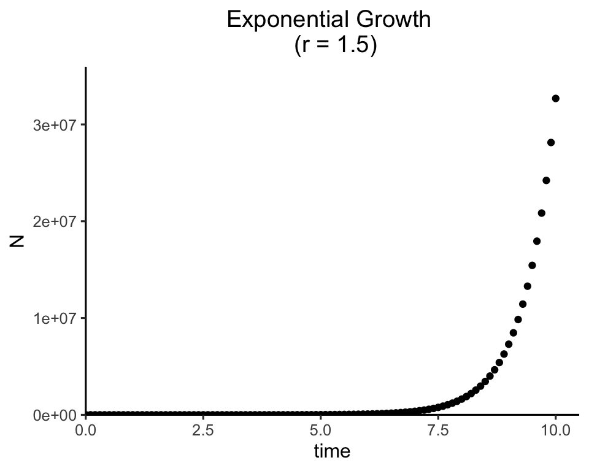
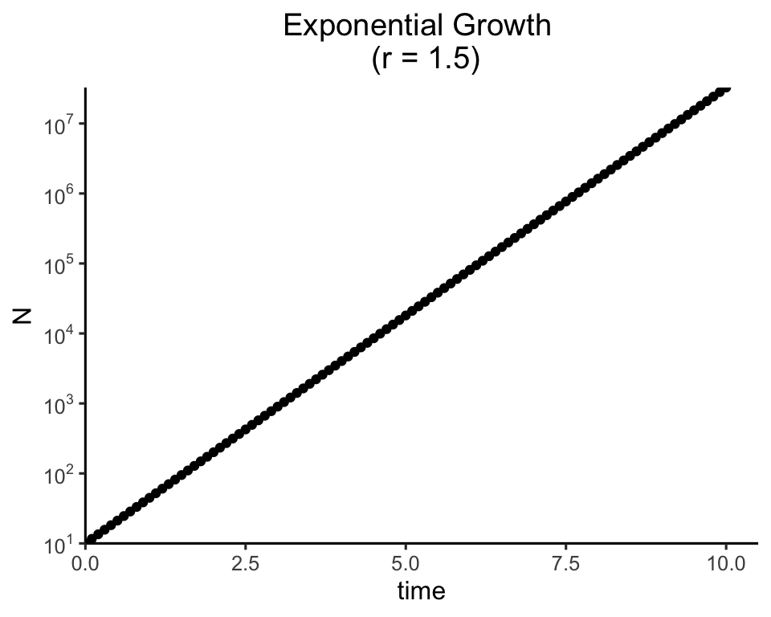

Week 2
Exponential population growth
Lecture in a nutshell
- Model derivation:
- Population growth rate: \(Birth - Death + Immigration - Emigration\)
- Per capita growth rate: \((birth - death + immigration - emigration)\times N\).
- Assumptions:
- Closed population: \(Immigration\) = \(Emigration = 0\)
- All individuals are identical: no genetic/age/stage structure
- Continuous population growth: no time lag
- Per capita birth and death rates are constant: time- and density-independent
- Solving the differential equation \(\frac{dN}{dt} = (b-d)N\):
- Use separation of variables and integrate both sides
- Plug in the initial condition \(N_0\) at \(t = 0\)
- Integration result: \(N_{(t)} = N_0e^{(b-d)t} = N_0e^{rt}\)
- Related concept:
- Doubling time \(t_d = \frac{ln(2)}{r}\)
- Average (expected) lifetime for an exponential decay function \(N_{(t)} = N_0e^{-\delta t}\):
- Probability density function (PDF): \(\frac{N_0e^{-\delta t} - N_0e^{-\delta (t+\Delta t)}}{N_0} \approx \delta e^{-\delta t}\) (linear approximation)
- Expected value: \(\int_{0}^{\infty}t\delta e^{-\delta t}dt\)
- Use integration by parts to evaluate the integral
- Integration result: \(\frac{1}{\delta}\)
- Relaxation of assumption 1:
- Net immigration/emigration is not zero: \(\frac{dN}{dt} = rN + I_{(t)}\)
- Solve the equation using the general solution to first-order linear differential equations
- Relaxation of assumption 4:
- Per capita growth rate \(r\) is not a constant but rather a function of time: \(\frac{dN}{dt} = r_{(t)}N\)
- An example of \(r_{(t)}\): \(r_{(t)} = \overline{r} + \frac{\sigma}{2}sin(\omega t + \phi)\)
- Biological interpretation of \(r_{(t)}\): seasonality, environmental fluctuations, etc.
Lab demonstration
In this lab, we will be solving the differential equation for exponential population growth (Part 1) and visualize how the population sizes change over time (Part 2).
Part 1 - Numerical solution using the package “deSolve”
Two main phases:
Model specification: specify the structure of differential equation model
Model application: set the time steps, initial population size, model parameters (e.g., intrinsic population growth rate r) and solve the equation
# install.packages("deSolve")
library(deSolve)
### (1) Model specification
exponential_model <- function(times, state, parms) {
with(as.list(c(state, parms)), {
dN_dt = r*N # exponential growth equation
return(list(c(dN_dt))) # return the results
})
}
### (2) Model application
times <- seq(0, 10, by = 0.1) # time steps to integrate over
state <- c(N = 10) # initial population size
parms <- c(r = 1.5) # intrinsic growth rate
# run the ode solver
pop_size <- ode(func = exponential_model, times = times, y = state, parms = parms)
# take a look at the results
head(pop_size)## time N
## [1,] 0.0 10.00000
## [2,] 0.1 11.61834
## [3,] 0.2 13.49860
## [4,] 0.3 15.68313
## [5,] 0.4 18.22120
## [6,] 0.5 21.17002Part 2. Visualize the integration results:
Linear scale
# install.packages("tidyverse")
library(tidyverse)
ggplot(data = as.data.frame(pop_size), aes(x = time, y = N)) +
geom_point() +
labs(title = paste0("Exponential Growth \n (r = ", parms["r"], ")")) +
theme_classic(base_size = 12) +
theme(plot.title = element_text(hjust = 0.5)) +
scale_x_continuous(limits = c(0, 10.5), expand = c(0, 0)) +
scale_y_continuous(limits = c(0, max(as.data.frame(pop_size)$N)*1.1), expand = c(0, 0))
Log scale
ggplot(data = as.data.frame(pop_size), aes(x = time, y = N)) +
geom_point() +
labs(title = paste0("Exponential Growth \n (r = ", parms["r"], ")")) +
theme_classic(base_size = 12) +
theme(plot.title = element_text(hjust = 0.5)) +
scale_x_continuous(limits = c(0, 10.5), expand = c(0, 0)) +
scale_y_log10(breaks = scales::trans_breaks("log10", function(x) 10^x)(c(10, 10^7)),
labels = scales::trans_format("log10", scales::math_format(10^.x)),
expand = c(0, 0))